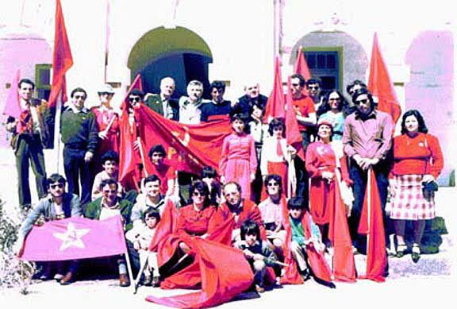

The troubled history of the small maltese communism
Communism the small archipelago is an even more marginal force than it is elsewhere in Europe. The motivation is in the difficult history of the country, only 60 years old in september: as of today, Malta is on of the catholic strongholds of Europe and it is stuck in a two-party system with the Nationalists and the Labourists.
The British, when Malta still was under their colonial control, employed two strategies to keep the maltese political scene under control. First of all, they kept the archipelago in a state of isolation from all european political currents, such as the marxist ideals.
TO BE CONCLUDED
Trockist IndependentOriginally written: 20th January 2024
Translated: _ January 2024